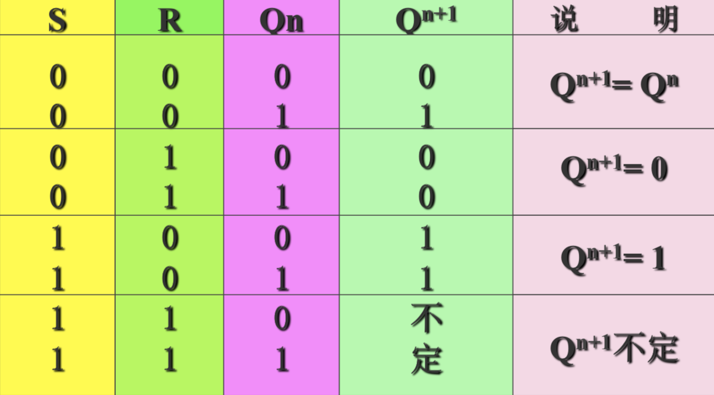
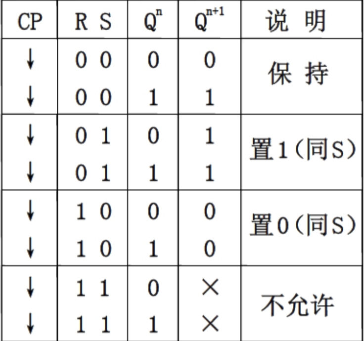
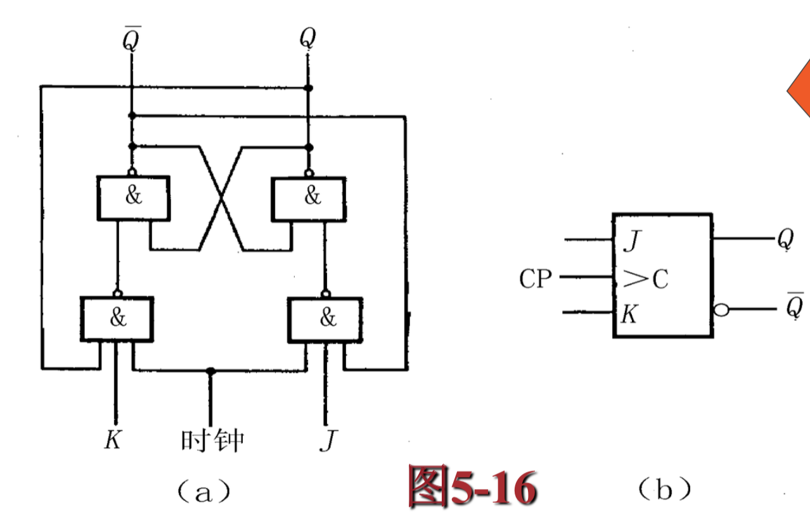
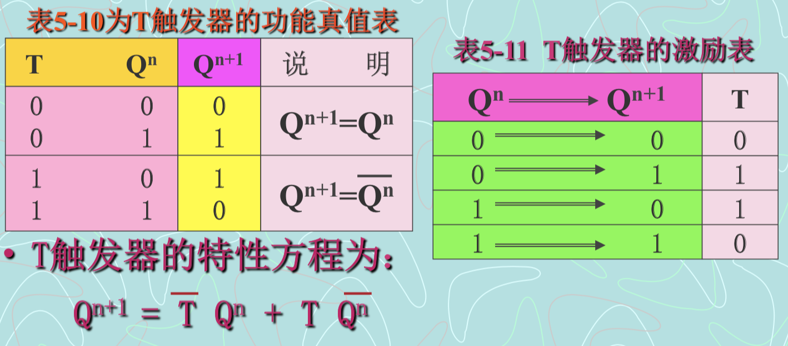

集成双稳态触发器
主要内容有
- 触发器的特点及分类
- 基本的RS触发器
- 事中控制的RS触发器，D触发器，JK触发器，T触发器的电路结构、逻辑功能及其描述方法。
- 触发器的性能参数。
触发器的基本特点及分类
输入量和输出量的设置
s0和R0代表初始状态预置输入量，X1和X2是正常工作的时候的输入量，Q为输出量，要求有两个相反的所以叫Q和非Q。
钟控式的再加一个CP为时钟控制输入量。
触发器输出与约束方程的一般表达式
设触发器输出次态的取值记作Qn+1，现态取值记Qn
触发器正常时要求R0 = S0 = 1！。
触发器的分类
基本RS双稳态触发器及其分析
本RS触发器是各种触发器电路中结构形式最简单的一种。同时，它又是复杂电路结构触发器的一个基本组成都分。
RS型（set reset）的电路结构和基本原理
习惯上将电路画成图5-4(b)的对称形式。
Q和Q称为输出端，并且定义Q=1、Q=0为触发器的1状态， Q=0、Q=1为触发器的0状态。
S为置位端或置1输入端，R成为复位端或置0输入端。
(1)当S=1，R=0时，Q=1,非Q=0。
(2)当S=0，R=1时，Q=0,非Q=1。
(3)当S=R=0时，电路维持原来状态不变。
(4)当S=R=1时，Q = 非Q= 0，既不是定义的1状态， 也不是定义的0状态。
真值表如下

输入信号在S或R为1的全部作用时间里， 都能直接改变输出端Q和Q的状态，这就是基本RS触发器的工作特点。
这个缘故，也把S(非S)叫做直接置位端; 把R(非R)叫做直接复位端
时钟RS触发器及其分析
触发器翻转的状态仍由输入控制端的电平情况决定，但翻转的时刻应由统一的脉冲信号来进行控制，这类控制信号称为时钟脉冲，CP (Clock Pulse)表示。
这类触发器成为同步触发器
时钟RS触发器结构与工作特性
真值表如下（即为只有CP为一时即触发）
一般在使用同步触发器时，有时还需要在cp信号来之前将触发器预置成指定状态，所以可能会出现专门的异步置位输入端S和异步复位输入端R，使触发器置于指定状态。
空翻现象
如果CP=1的期间内输入信号多次发生变化，则触发器的状态也会发生多次翻转，这就降低了电路的抗干扰能力，也叫“空翻”现象。
主从触发器
主从RS触发器动作特点：
主从RS触发器的动作分两步完成。
先在CP=1期间，主触发器接收输入驱动RS信号进行主触发器的状态修改，但从触发器不动作。
第二步，在CP=0时刻，从触发器按照此时主触发器的状态进行动作。
主从RS触发器解决了空翻问题，但在CP=1期间，RS仍存在约束条件。
RS = 0 (约束条件）
特征表如下：

时钟D触发器及其分析
电路结构与工作原理
为了适用于单端输入信号的场合，在有些集成电路中也把同步RS触发器作成下图的结构形式 通常把这种电路叫D型触发器(或D型锁存器)。
逻辑功能及其描述方法
功能真值表和激励表
RS触发器演变而来，它克服了RS触发器在 S=R=1时，次态不定的功能不完善缺点。
D触发器的空翻
D触发器依然存在“空翻”现象，实际广泛使用的集成D触 发器采用了维持阻塞结构，称为维持阻塞D触发器。
维持阻塞D触发器状态变化产升在时钟脉冲的上升沿，其次态决定于该时刻前瞬间输入信号D。
时钟JK触发器及其分析
为了消除时钟控制RS 触发器输入信号的约束条件，又使触发器有两个输入端，可在时钟控制RS触发器中增加两条交叉反馈线，并将输入端S改为J，R改为K。

逻辑功能及其描述方法
功能真值表和激励表
特征方程：
Qn+1 = J 非Q + 非k Q
主从集成JK触发器
和RS触发差不多
时钟T触发器及其分析
T触发器可看成是JK触发器在J=K条件下的特例
T触发器的逻辑功能可概括为：T=0时触发器保持原状太不变；T=1时触发器翻转。
